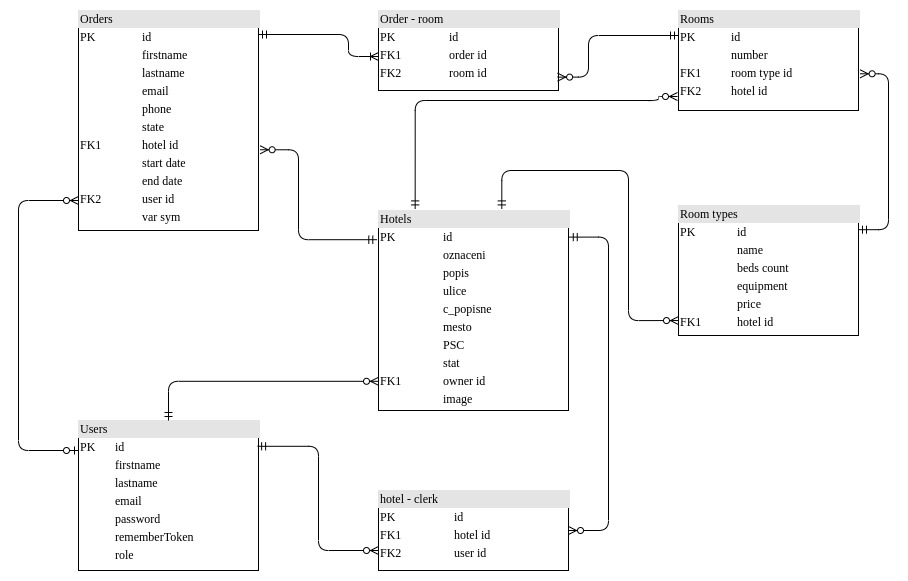

Varianta termínu - 2. Hotel: rezervace a správa ubytování
- Autoři
- Mušková Kateřina
xmusko00@stud.fit.vutbr.cz - založení a prvotní zprovoznění projektu, implementace objektových modelů, implementace front-endu i backendu vyhledávání, řešení práce s mediálními soubory (obrázky), úpravy funkcionalit a vzhledu objednávek a hotelů, práce na front-endu
- Holas David
xholas11@stud.fit.vutbr.cz - implementace uživatelů a rolí, nasazení autentizace, prvotní implementace objednávek, vytvoření základní struktury systému z uživatelského hlediska, kontrola validace dat, práce na front-endu, nasazení na server
- Hubík Antonín
xhubik03@stud.fit.vutbr.cz - implementace správy hotelů a pokojů a tomu přímo podřízených funkcionalit, úpravy funkcionalit a vzhledu objednávek, kontrola validace dat, integrity, ukládání a mazání perzistentních dat, dokumentace
- URL aplikace
- https://mrkew.lumolet.cz
Uživatelé systému pro testování
Níže jsou uvedeni připravení zástupci všech rolí uživatelů.
| Přihlašovací e-mail | Heslo | Role |
|---|
| admin@admin.com | admin123 | Administrátor |
| owner@owner.com | owner123 | Vlastník hotelů |
| clerk@clerk.com | clerk123 | Recepční |
| customer@customer.com | customer123 | Registrovaný zákazník |
Role a s nimi spojené případy užití odpovídají zadání varianty.
Implementace
Projekt byl v souladu se zadáním navržen s využitím architektury MVC. Samotná implementace byla realizována ve frameworku Laravel,
který zahrnuje možnost do projektu zabudovat předpřipravený "out of box" systém autentizace využívající možnosti frameworku Vue. Laravel také umožňuje snadnou integraci nástrojů z knihovny Bootstrap pro snesitelnější výsledný front-end.
Přehled struktury řešení
Struktura řešení plně odpovídá standardní struktuře Laravelového projektu.
Soubory obsahující nové a během implementace upravené php skripty, HTML soubory a další prvky se nacházejí v těchto složkách (shodné se složkami odevzdanými ve WIS):
- app - obsahuje soubory PHP backendu: třídy sloužící k modelování entit v objektově relačním mapování Eloquent ORM, s nimi související controllery, zahrnující vygenerované skripty související s autentizací a autorizací uživatelů.
- database - obsahuje PHP Factory třídu využívanou ke korektnímu přidávání uživatelů (včetně hashování hesel), databázové migrace definující mapování objektových modelů na relační databázi a vazební tabulky, a PHP skripty pro seedování databáze během vývoje.
- public - obsahuje definice aplikovaných kaskádových stylů (tyto soubory byly rovněž vygenerovány a jsou zde uvedeny jen kvůli tomu, že obsahují několik spíše menších zásahů).
- resources - obsahuje všechny soubory definující uživatelské rozhraní aplikace (views) včetně vygenerovaných souborů pro zobrazení registračních a přihlašovacích oken, kde byly rovněž provedeny drobné úpravy.
- routes - obsahuje pouze soubor web.php, kde jsou všechna explicitně definovaná URI v rámci systému, společně s funkcemi příslušných kontrolérů, které se mají volat v případě pokusu o přístup ke zdrojům na těchto cestách. Ostatní soubory standardně očekávané v této složce nebyly upravovány, a proto ani odevzdány.
v následujícíh třech oddílech jsou stručně popsány soubory tvořící jádro implementace funkcionalit, zobrazení a práce s daty.
Views
Všechny pohledy byly implementovány v Blade enginu poskytovaném Laravelem, s použitím HTML, PHP a Blade direktiv. Všechny soubory končí příponou .blade.php, proto budou všude níže uváděna pouze jejich pojmenování.
auth
- passwords/login, register, verify - confirm, email, reset - vygenerované soubory, uvedené pouze pro kontext.
- login, register, verify - vygenerované, view register bylo upraveno, aby lépe vyhovovalo funkcionalitě dokončení registrace pro neregistrovaného zákazníka po dokončení objednávky.
components
- search_bar - definuje vyhledávací panel na úvodní stránce aplikace.
hotels
- add - formulář pro přidání nového hotelu: vyplnění povinných údajů, volitelné přidání popisu a obrázku,
- clerk_choose - vybrání a přiřazení recepčních k hotelu,
- edit - formulář pro úpravu již existujícího hotelu, podobný add
- hotel_clerks_index - seznam recepčních pracujících v hotelu, umožňuje jejich odebrání,
- index - zobrazuje seznamy hotelů majitelům, umožňuje přejít na detail
- owner_show - zobrazení detailu hotelu pro jeho majitele, ukáže informace o hotelu, recepčních, typech pokojů, umožňuje přejít na související úpravy a vytváření/přiřazování souvisejících entit,
- public_show - zobrazení detailu hotelu pro zákazníka, ukáže informace o hotelu a dostupných pokojích, umožňuje zvolit pokoje k rezervaci a přejít na objednávku.
layouts
- app - vygenerovaný, pouze upravený soubor, obsahuje definici rozložení celé stránky, přímo obaluje téměř všechny ostatní pohledy (Blade direktiva @extends). Obsahuje horní lištu a na ní přítomné uživatelské menu s možnostmi závislými na roli uživatele.
orders
- create - formulář pro zadání chybějících údajů k objednávce. Některé údaje přebírá při přechodu z hotels/public_show,
- index - zobrazí seznam objednávek v závislosti na uživateli a jeho roli, umožňuje filtrování podle stavu objednávky,
- show - zobrazí detailní informace o objednávce, roli recepčního a vyšším umožňuje změnit stav objednávky,
- summary - ukáže shrnutí v posledním kroku objednávacího procesu, umožňuje potvrdit objednávku.
profile
- edit/email, firstname, lastname, password, role - pohledy úpravy jednotlivých uživatelských údajů (viz názvy),
- index - ukáže seznam všech uživatelů (určeno pouze pro administrátora), možnost přejít na detail uživatele
- show - pohled na detail uživatele, pro administrátora s možností přejít na úpravy údajů o uživateli.
rooms
- create - přidání nového fyzického pokoje k hotelu, přiřazení typu tomuto pokoji (pokoj vždy musí být nějakého typu)
- edit - změna čísla a typu pokoje,
- index - seznam pokojů pro daný hotel, možnost přejít na přidání, úpravu, smazání pokoje
roomTypes
- index, edit, create - seznam typů pokojů pro daný hotel,mazání, vytvoření a editace nového pokoje (název, počet lůžek, cena, vybavení), analogicky s výše uvedenými pohledy.
welcome
- index - zahrnuje komponentu vyhledávací panel (Blade direktiva @include), jinak obsahuje pouze uvítací zprávu na hlavní stránce,
- search - zahrnuje v sobě komponentu vyhledávací panel, řeší zobrazení vyhledaných hotelů s volnou kapacitou pro zadaný dotaz a požadované kalendářní období, popřípadě zprávu, že žádné takové hotely nebyly nalezeny.
home
Domovská stránka uživatele, v závislosti na roli zobrazí možnosti zobrazení profilů (aspoň admin), hotelů (aspoň vlastník) a objednávek(aspoň recepční). Objednávky zákazníka, stejně jako osobní objednávky uživatelů s jinými rolemi, jsou dostupné přes menu na horní liště.
Controllers
Controllery příslušných částí datového modelu jsou implementovány jako PHP třídy dědící připravenou třídu Controller.
- Auth/RegisterController
- vygenerovaný, upravený soubor, zajišťuje, že po registraci se spravným způsobem vytvoří na modelu (a tedy v databázi) nový uživatel.
- HomeController -obsahuje jedinou funkci, jejíž zavolání zobrazí domovskou stránku uživatele.
- HotelController - obsahuje funkce pro zobrazování všech pohledů souvisejících s hotely, včetně seznamu hotelů nalezeného vyhledáváním. Zajišťuje nahrávání vhodných dat z databáze podle uživatelů a hotelů, kterúm jsou data určena, a především validaci dat před uložením do databáze. Obsahuje vyhledávací logiku, včetně načítání informací o volných pokojích a jejich typech. Zajišťuje korektní mazání celých hotelů a všech s nimi souvisejících informací (počítá se znalostí kontextu nastavení databáze v migracích, například spolehá na kaskádování). Pracuje zejména s objektovým modelem hotelu a s vazebními tabulkami, např. pro zjišťování a změny recepčních pracujících v hotelu.
- OrderController -obsahuje funkce pro zobrazování jednotlivých kroků tvorby nové objednávky, zajišťuje spojení těchto kroků do uživatelského sezení, validaci a uložení výsledné objednávky do databáze a v případě neregistrovaných uživatelů přesměrování na registrační formulář. Podle identity a role zákazníka dále vybírá z datového modelu náležité informace o objednávkách. Obsahuje funkci pro změnu stavu objednávky, je-li uživatel přinejmenším recepční. Samotné objednávky se nikdy nemažou, logika pro jejich mazání zde tedy není implementována.
- ProfileController - analogicky s předchozími kontroléry se stará o příslušné pohledy pro zobrazování a úpravy dat a odstraňování uživatelů.
- RoomController - analogický s předchozími kontroléry, za zmínku stojí kontrola při mazání pokoje: pokoj nesmí mít v okamžiku smazání žádnou aktivní objednávku, jinak nebude smazán. Při mazání pokoje se smažou všechny s ním spojené neaktivní objednávky.
- RoomTypeController - analogicky k předchozím, při mazání typu pokoje se nejdřív s využitím logiky pro mazání pokoje ověří, že všechny pokoje tohoto typu lze smazat. Pokud ne, mazání selže.
- WelcomeController - obsahuje funkce pro zobrazení uvítací stránky a stránky s výsledky hledání.
Models
Modely obsahují třidy s objektovými reprezentacemi datových entit. Jsou odvozeny od mateřské třidy poskytnuté Laravelem. Za zmínku zde stojí enumerátor user_role a funkce isAtLeast(), které společně tvoří rozhraní pro ověřování role uživatele napříč celým systémem. Funkce isAtLeast() ověřuje, že uživatel je přinejmenším majitelem zadané role (protože uživatelská oprávnění se podle zadání stupňují a každý stupeň má kromě vlastních práv i práva nižších stupňů).
Přesné podoby tabulek včetně integritních omezení a vazebních tabulek jsou dodefinovány v migracích projektu. Připojení k fyzické databázi je konfigurováno (nutno nakonfigurovat) ve skrytém souboru .env v kořenovém adresáři projektu.
Databáze

Instalace
Postup instalace na server
Kvůli povaze hostingu, který nepovoluje přístup přes SSH jsme museli zvolit alternativní variantu instalace na server. Pro potřeby školního projektu tato varianta sice postačí, ale není doporučena a pro nasazení reálného systému by určitě bylo lepší připlatit si za server přístupem přes SSH.
K instalaci je nutné:
- Exportovat lokální databázi do .sql souboru a importovat na serveru
- Upravit nastavení databáze v souboru config/database.php tak aby odpovídalo databázi na serveru
- Soubory index.php a .htaccess ze složky public posunout o úroveň výš do kořenového adresáře aplikace
- V souborech index.php a server.pho změnit cesty, které předpokládají, že index.php je stále ve složce public
- Obdobně upravit všechny cesty předávané do funkce asset v souboru views/layout/app.blade.php
- Cesty k obrázkům v souborech views/hotels/owner_show.blade.php, views/hotels/public_show.blade.php a views/welcome/search.blade.php upravit tak, aby ukazovaly na obrázky uložené v storage/app/public/images
- Zakázat přístup k .env souboru v .htaccess
- Nahrát takto upravenou aplikaci na server
Pro podrobnější postup doporučuji navštívit tutoriál, ze kterého jsme při instalaci čerpali.
Softwarové požadavky
- PHP 7.4
- PHP rozšíření:
- BCMath PHP Extension
- Ctype PHP Extension
b
- Fileinfo PHP Extension
- JSON PHP Extension
- Mbstring PHP Extension
- OpenSSL PHP Extension
- PDO PHP Extension
- Tokenizer PHP Extension
- XML PHP Extension
- Composer
- Balík laravel
- npm package manager
- MySQL 8
- Apache 2.2 (pro účely vývoje stačí vývojový server dostupný příkazem
php artisan serve)
Jak rozbalit, konfigurovat, inicializovat databázi, ...
Známé problémy
Z časových důvodů nebyla oproti zadání implementována možnost filtrování hotelů podle vybavení, počtu lůžek, apod. Vyhledávat hotely je možné podle názvu, státu, či města, kde se nacházejí, a datových rozmezí, kdy jsou v hotelu dostupné nějaké pokoje.